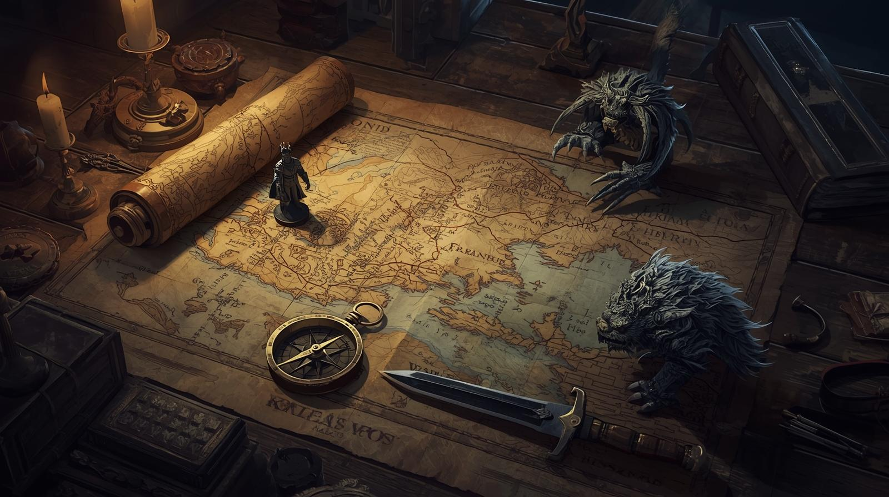

Busque criaturas, itens ou lendas...
O UNIVERSO PUBLICADO
O Caminho do Mestre
Guia de regras e táticas (MVP).
BATALHA POR VORLAG: O JOGO

O RPG tático de turnos oficial. Use o conhecimento do Arquivo Arcano para vencer. O jogo demonstra as regras D20 da página 31 do Grimório.
🎮 Jogar Alpha Tático 💬 Entrar no Discord